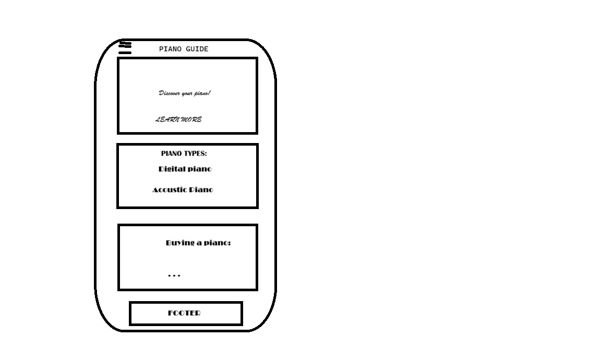
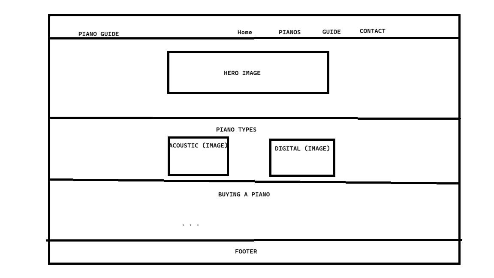

Site Name
Piano Guide
The name "Piano Guide" was selected because it is simple, easy to understand, and clearly communicates the purpose of the website. The site will guide visitors through different types of pianos and help them understand what to consider when choosing an instrument.
Possible domain: piano-guide.org
Site Purpose
Piano Guide will provide useful information about pianos for beginners, students, musicians, and people who are considering purchasing an instrument. The website will explain different types of pianos, compare their characteristics, and provide guidance about what to consider before buying a piano.
The site will also help visitors understand which type of piano may be appropriate for different situations, such as learning at home, playing professionally, or working with limited space.
Scenarios
Potential visitors may have questions such as:
- What type of piano is best for a beginner?
- What is the difference between an acoustic piano and a digital piano?
- What should I consider before buying a piano?
- Which piano would be suitable for someone with limited space at home?
Color Scheme
The color scheme combines dark gray-blue, warm ivory, and gold. These colors were selected to create a modern and elegant appearance while also reflecting the traditional character of the piano.
#1F2937
Dark Gray-Blue. Used for the header, headings, navigation, and important text.
#F5F1E8
Warm Ivory. Used as the main background color and for light content areas.
#C9A227
Gold. Used for accents, buttons, borders, and other elements that need visual emphasis.
Typography
Playfair Display
Playfair Display will be used for the main headings and other important titles. Its classic appearance supports the elegant character of the website.
Roboto
Roboto will be used for paragraphs, navigation, buttons, forms, and other general content because it is easy to read on different screen sizes.
Wireframe
The wireframes below represent the planned layout of the home page for small and large viewports. The final wireframes will be created as black-and-white sketches before development.
Small Viewport

Large Viewport
